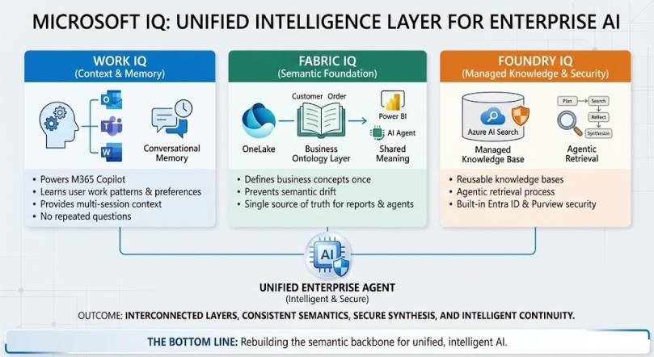
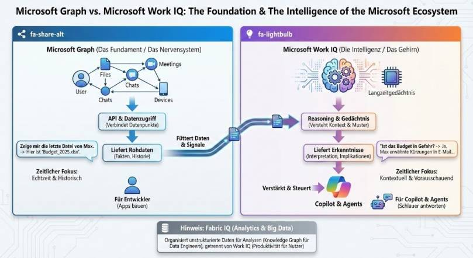

This post is a practical explanation of Microsoft IQ — the intelligence layer that finally makes enterprise AI agents work in production. I cover what IQ is, where it sits in the Microsoft AI stack, and how it changes the way IT admins design and deploy AI agents grounded in tenant data.
How Microsoft IQ Makes Enterprise AI Agents Work

Let’s be honest: building AI agents in the enterprise has been a mess. You spend 80% of your time stitching together data sources, wrestling with RAG pipelines, and praying your agent doesn’t hallucinate the CEO’s name. Every new project feels like reinventing the wheel – but a wheel made of duct tape and hopes.
At Ignite 2025, Microsoft dropped something that might actually change this. They call it “IQ” – a unified intelligence layer that spans across Microsoft 365, Fabric, and Microsoft Foundry. And no, it’s not just another buzzword. If you’ve been experimenting with smaller Foundry use cases, like a paperless-office document manager, this is the enterprise-scale version of that same idea. Let me break down what this actually means for you.
The Three Pillars of Microsoft IQ
Think of IQ as three interconnected brains working together:
Work IQ powers Microsoft 365 Copilot. It understands how you work, who you work with, and what content you’re collaborating on. It’s built on your emails, files, meetings, and chats – plus your preferences, habits, and work patterns. The key difference? It’s not just pulling data through connectors. It’s building actual context and memory across your interactions.
Fabric IQ brings semantic meaning to your data platform. It’s essentially a business ontology layer that sits on top of OneLake. Define “Customer,” “Order,” or “Asset” once, and every Power BI report, notebook, and AI agent speaks the same language. No more three different definitions of “revenue” floating around your organization.
Foundry IQ is where it gets interesting for developers. It’s a fully managed knowledge system built on Azure AI Search that grounds your AI agents. Instead of building custom RAG pipelines for every project, you get reusable knowledge bases accessible through a single API.
Why This Actually Matters
Here’s the thing that makes this different from typical Microsoft announcements: these three IQ layers talk to each other.
Imagine building an agent that needs to answer: “How is our pipeline trending against last year’s Q4, and are there any delays flagged in customer conversations?”
With traditional approaches, you’d need to:
- Query your CRM database
- Search through SharePoint documents
- Parse Teams messages
- Somehow reconcile different definitions of “pipeline”
- Hope nothing hallucinates
With the unified IQ layer, your agent can query Fabric IQ for structured pipeline data, tap into Work IQ for conversation signals, and use Foundry IQ’s agentic retrieval to synthesize it all – with consistent semantic understanding throughout.
Foundry IQ: RAG Without the Pain
I’ve built enough RAG pipelines to know they’re painful. Foundry IQ tackles this head-on with what Microsoft calls “agentic retrieval.” Instead of just doing vector similarity search and hoping for the best, it actually:
- Plans the query – Understands what information is actually needed
- Iteratively searches – Hits multiple knowledge sources
- Reflects on results – Determines if more searching is needed
- Synthesizes findings – All while respecting user permissions
The enterprise security piece is worth highlighting: it integrates with Entra ID and respects Microsoft Purview sensitivity labels throughout the pipeline. This is huge for regulated industries where DIY RAG stacks often have to approximate security rules in application code.
Work IQ: Copilot Gets Memory
The Work IQ piece solves something that’s bothered me about Copilot: context continuity. Through what Microsoft calls “conversational memory,” Copilot can now remember context and important details across sessions.
It uses your work profile, instructions, preferences, and insights from past chats. You stay in control – you can review or delete these memories anytime. But the practical impact is that Copilot stops asking you the same questions over and over.
Work IQ also powers model routing. Based on your prompt and intent, it can select the right model for the task – whether that’s GPT-5, Claude from Anthropic, or specialized fine-tuned models. This is Microsoft betting on a multi-model future rather than locking everything to OpenAI.
Fabric IQ: The Semantic Foundation
For those of us who’ve dealt with the chaos of enterprise data, Fabric IQ addresses a fundamental problem: semantic drift. When different teams define the same business concept differently, your AI agents inherit that confusion.
The new Ontology item in Fabric (now in public preview) lets you:
- Define entity types, properties, and relationships once
- Bind these to actual data sources
- Automatically build a navigable graph
- Share definitions across all analytics, apps, and agents
The practical example: instead of your AI agent trying to understand what “Customer” means by parsing three different database schemas, it just asks the ontology. One source of truth, everywhere.
Getting Started
Here’s what I’d recommend if you want to explore this:
Start with Fabric IQ if you’re already in the Fabric ecosystem. The Ontology item is in public preview – define a few core business entities and see how they propagate through your reports and data agents.
Check out Foundry IQ if you’re building custom agents. The preview gives you access to knowledge bases and agentic retrieval without the RAG infrastructure headache.
Work IQ features are rolling out through Copilot updates. The conversational memory is available through the Frontier program if you have access.
Microsoft Graph vs. Work IQ: Foundation vs. Intelligence
This is probably the question I get asked most: “Isn’t this just Microsoft Graph with a new name?” Short answer: No. Let me explain.
Microsoft Graph is the Foundation – think of it as the nervous system of Microsoft 365. It connects all your data points: Users, Files, Meetings, Chats, Devices. Through its API, you get raw data access – facts and history. When you query “Show me the last file from Max,” Graph returns Budget_2025.xlsx. That’s it.
Graph is built for developers who want to build apps. It’s excellent at what it does: providing a unified API to access Microsoft 365 data. But it’s fundamentally a data retrieval system.
Work IQ is the Intelligence Layer – think of it as the brain sitting on top of Graph. It doesn’t just retrieve data; it understands context and patterns. It has long-term memory of your work habits and preferences. When you ask “Is the budget at risk?”, Work IQ can answer: “Yes, Max mentioned cuts in an email last week, and the Q3 projections show a 15% shortfall.”
The key differences:
| Aspect | Microsoft Graph | Work IQ |
| Role | Foundation / Nervous System | Intelligence / Brain |
| Output | Raw Data (Facts, History) | Insights (Interpretation, Implications) |
| Time Focus | Real-time & Historical | Contextual & Predictive |
| Built For | Developers (Building Apps) | Copilot & Agents (Smart Responses) |
Work IQ feeds on Graph data, adds reasoning and memory, and powers Copilot and your custom agents. Graph is still there – it’s not going anywhere. Work IQ just makes it smarter.

And yes, Fabric IQ sits alongside this for Analytics and Big Data use cases – organizing unstructured data for analysis through knowledge graphs, separate from the productivity focus of Work IQ.
The Bottom Line
Microsoft is essentially rebuilding the semantic backbone of their entire AI strategy. Whether you love or hate the “IQ” branding, the technical substance is real: unified semantics across your data platform, productivity apps, and AI development tools.
The organizations that will benefit most are the ones that invest in semantic modeling now. Define your business concepts clearly, populate your SharePoint with structured metadata, and start thinking about how these three layers connect.
This isn’t about replacing your existing investments – it’s about making everything you’ve already built work together intelligently. And honestly? It’s about time.
This is a big step forward to the frontier transformation. If you want to learn more about this, check out this post: https://epicfusion.com/blog-and-news/frontier-unternehmen-wo-mut-zukunft-schafft. We at epic fusion support companies on the journey to becoming a real frontier company.